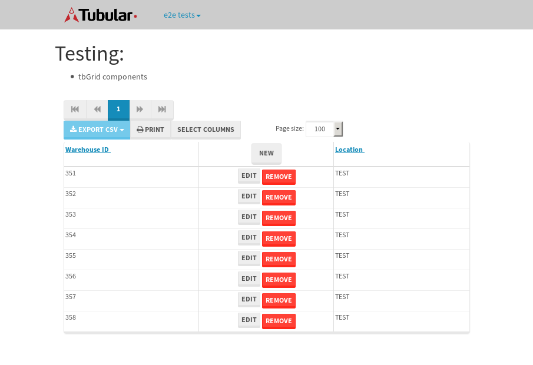

tbColumn.Grid Sorting - 177.003sTests: 5Skipped: 0Failures: 3 should sort data in ascending order then on descending order when sorting by Order Id column - 44.249sExpected '1' to be '500'.✗Expected '20' to be '481'.✗Tests passed: 50.00%should order data in ascending order when click-sorting an unsorted text column - 23.345sTests passed: 100.00%should order data in descending order when click-sorting an ascending-sorted text column - 43.211sExpected 'Advanced Technology Systems' to be 'Vesta'.✗Tests passed: 0.00%should order data in ascending order when click-sorting an unsorted date column - 23.108sTests passed: 100.00%should order data in descending order when click-sorting twice an unsorted date column - 43.082sExpected '12/30/2015' to match /1\/01\/2016/.✗Tests passed: 0.00%
tbEmptyForm - 2.354sTests: 3Skipped: 0Failures: 0 should have an empty required field - 0.72sTests passed: 100.00%should not be able to click on save - 0.027sTests passed: 100.00%should load default value for numeric field - 0.029sTests passed: 100.00%
Tubular Filters.tbColumnFilter - 97.4sTests: 12Skipped: 0Failures: 0 should cancel filtering when clicking outside filter-popover - 7.531sTests passed: 100.00%should disable Value text-input for "None" filter - 5.674sTests passed: 100.00%should disable apply button for "None" filter - 5.635sTests passed: 100.00%should decorate popover button when showing data is being filtered for its column - 11.129sTests passed: 100.00%should correctly filter data for the "Equals" filtering option - 7.65sTests passed: 100.00%should correctly filter data for the "Not Equals" filtering option - 7.541sTests passed: 100.00%should correctly filter data for the "Contains" filtering option - 7.379sTests passed: 100.00%should correctly filter data for the "Not Contains" filtering option - 7.957sTests passed: 100.00%should correctly filter data for the "Starts With" filtering option - 6.987sTests passed: 100.00%should correctly filter data for the "Not Starts With" filtering option - 6.381sTests passed: 100.00%should correctly filter data for the "Ends With" filtering option - 6.338sTests passed: 100.00%should correctly filter data for the "Not Ends With" filtering option - 6.041sTests passed: 100.00%
Tubular Filters.tbColumnDateTimeFilter - 125.898sTests: 12Skipped: 0Failures: 0 should cancel filtering when clicking outside filter-popover - 6.44sTests passed: 100.00%should disable Value text-input for "None" filter - 5.629sTests passed: 100.00%should disable apply button for "None" filter - 5.867sTests passed: 100.00%should clear filtering when clicking on Clean button - 16.603sTests passed: 100.00%should decorate popover button when showing data is being filtered for its column - 11.188sTests passed: 100.00%should correctly filter data for the "Equals" filtering option - 6.674sTests passed: 100.00%should correctly filter data for the "Not Equals" filtering option - 6.396sTests passed: 100.00%should correctly filter data for the "Between" filtering option - 11.013sTests passed: 100.00%should correctly filter data for the "Greater-or-equal" filtering option - 10.883sTests passed: 100.00%should correctly filter data for the "Greater" filtering option - 10.842sTests passed: 100.00%should correctly filter data for the "Less-or-equal" filtering option - 10.75sTests passed: 100.00%should correctly filter data for the "Less" filtering option - 10.857sTests passed: 100.00%
Tubular Filters.tbColumnOptionsFilter - 78.379sTests: 3Skipped: 0Failures: 0 should cancel filtering when clicking outside filter-popover - 7.423sTests passed: 100.00%should decorate popover button when showing data is being filtered for its column - 10.938sTests passed: 100.00%should filter column-elements in accordance to the selected filter when selecting a single option - 47.992sTests passed: 100.00%
Tubular Filters.tbTextSearch - 43.978sTests: 5Skipped: 0Failures: 0 min-chars is not set - 0.076sTests passed: 100.00%should filter data in searchable-column customer name to matching inputted text, starting from 3 characters - 5.911sTests passed: 100.00%should filter data in searchable-column shipper city to matching inputted text, starting from 3 characters - 11.017sTests passed: 100.00%should show clear button when there is inputted text only - 5.576sTests passed: 100.00%should clear filtering when clicking clear button - 15.355sTests passed: 100.00%
tbForm related components.tbCheckboxField - 6.039sTests: 2Skipped: 0Failures: 0 should save changes on "SAVE" - 2.381sTests passed: 100.00%should discard changes on "CANCEL" - 1.821sTests passed: 100.00%
tbForm related components.tbDropDownEditor - 9.784sTests: 5Skipped: 0Failures: 0 should set initial input value to the value of "value" attribute when defined - 0.898sTests passed: 100.00%should show the component name value in a label field when "showLabel" attribute is true - 0.831sTests passed: 100.00%should show a help field equal to this attribute, is present - 1.102sTests passed: 100.00%should submit modifications to item/server when clicking form "Save" - 3.831sTests passed: 100.00%should NOT submit modifications to item/server when clicking form "Cancel" - 2.227sTests passed: 100.00%
tbForm related components.tbTextArea - 16.067sTests: 7Skipped: 0Failures: 0 should set initial input value to the value of "value" attribute when defined - 1.209sTests passed: 100.00%should be invalidated when the number of chars is not in the range of "min" and "max" attributes - 1.419sTests passed: 100.00%should show the component name value in a label field when "showLabel" attribute is true - 1.341sTests passed: 100.00%should show a help field equal to this attribute, is present - 1.681sTests passed: 100.00%should require the field when the attribute "required" is true - 2.714sTests passed: 100.00%should submit modifications to item/server when clicking form "Save" - 4.566sTests passed: 100.00%should NOT submit modifications to item/server when clicking form "Cancel" - 1.239sTests passed: 100.00%
tbForm related components.tbDateEditor - 10.134sTests: 6Skipped: 0Failures: 0 should set initial date value to the value of "value" attribute when defined - 0.893sTests passed: 100.00%should be invalidated when the date is not in the range of "min" and "max" attributes - 1.764sTests passed: 100.00%should show the component name value in a label field when "showLabel" attribute is true - 0.846sTests passed: 100.00%should show a help field equal to this attribute, is present - 0.756sTests passed: 100.00%should submit modifications to item/server when clicking form "Save" - 1.862sTests passed: 100.00%should NOT submit modifications to item/server when clicking form "Cancel" - 3.119sTests passed: 100.00%
tbForm related components.tbTypeaheadEditor - 20.221sTests: 7Skipped: 0Failures: 0 should show an options list when there is an API-info/component entered-data - 3.724sTests passed: 100.00%should select the option clicked - 1.778sTests passed: 100.00%should show a "delete" button when an option/match is selected, and delete the option if button is clicked - 2.25sTests passed: 100.00%should show a label value equal to the component name when "showLabel" attribute is true - 2.229sTests passed: 100.00%should require a value when "require" attribute is true - 3.112sTests passed: 100.00%should submit modifications to item/server when clicking form "Save" - 4.229sTests passed: 100.00%should NOT submit modifications to item/server when clicking form "Cancel" - 1.716sTests passed: 100.00%
tbForm related components.tbSimpleEditor - 13.786sTests: 9Skipped: 0Failures: 0 should set initial input value to the value of "value" attribute when defined - 0.709sTests passed: 100.00%should be invalidated when the number of chars is not in the range of "min" and "max" attributes - 1.193sTests passed: 100.00%should show the component name value in a label field when "showLabel" attribute is true - 0.807sTests passed: 100.00%should set input placeholder to the value of "placeholder" attribute - 0.967sTests passed: 100.00%should validate the control using the "regex" attribute, if present - 1.096sTests passed: 100.00%should show a help field equal to this attribute, is present - 0.982sTests passed: 100.00%should require the field when the attribute "required" is true - 1.084sTests passed: 100.00%should submit modifications to item/server when clicking form "Save" - 4.63sTests passed: 100.00%should NOT submit modifications to item/server when clicking form "Cancel" - 1.725sTests passed: 100.00%
tbForm related components.tbNumericEditor - 11.036sTests: 7Skipped: 0Failures: 0 should set initial component value to the value of "value" attribute when defined - 0.777sTests passed: 100.00%should be invalidated when the entered number is not in the range of "min" and "max" attributes - 1.445sTests passed: 100.00%should show the component name value in a label field when "showLabel" attribute is true - 0.847sTests passed: 100.00%should show a help field equal to this attribute, is present - 0.84sTests passed: 100.00%should require the field when the attribute "required" is true - 1.266sTests passed: 100.00%should submit modifications to item/server when clicking form "Save" - 3.547sTests passed: 100.00%should NOT submit modifications to item/server when clicking form "Cancel" - 1.431sTests passed: 100.00%
tbForm Connection Error NoModelKey - 2.351sTests: 1Skipped: 0Failures: 0 tbForm connection error functionality - 0.005sTests passed: 100.00%
tbForm Connection Error NoServerUrl - 2.05sTests: 1Skipped: 0Failures: 0 tbForm connection error functionality - 0.003sTests passed: 100.00%
tbGridComponents - 28.26sTests: 6Skipped: 0Failures: 1 should add item with newRow method - 3.002sTests passed: 100.00%should add item with newRow method and cancel action - 0.478sTests passed: 100.00%should update item with tbSaveButton - 1.696sTests passed: 100.00%should NOT update item on cancel Update action - 0.559sTests passed: 100.00%should remove item with tbRemoveButton - 20.44sExpected 8 not to be 8, 'should remove the row from the table'.✗Tests passed: 50.00%should NOT remove item on cancel Remove action - 0.688sTests passed: 100.00%
tbGridPager.navigation buttons - 3.517sTests: 1Skipped: 0Failures: 0 should perform no action when clicking on the numbered navigation button corresponding to the current-showing results page - 1.005sTests passed: 100.00%
tbGridPager.navigation buttons.first/non-last results page related functionality - 0.808sTests: 2Skipped: 0Failures: 0 should disable "first" and "previous" navigation buttons when in first results page - 0.139sTests passed: 100.00%should enable "last" and "next" navigation buttons when in a results page other than last - 0.669sTests passed: 100.00%
tbGridPager.navigation buttons.last/non-first results page related functionality - 1.703sTests: 2Skipped: 0Failures: 0 should disable "last" and "next" navigation buttons when in last results page - 0.973sTests passed: 100.00%should enable "first" and "previous" navigation buttons when in a results page other than first - 0.729sTests passed: 100.00%
tbGridPager.page navigation - 6.207sTests: 5Skipped: 0Failures: 0 should go to next results page when clicking on next navigation button - 1.494sTests passed: 100.00%should go to previous results page when clicking on previous navigation button - 2.111sTests passed: 100.00%should go to last results page when clicking on last navigation button - 1.325sTests passed: 100.00%should go to first results page when clicking on first navigation button - 0.674sTests passed: 100.00%should go to corresponding results page when clicking on a numbered navigation button - 0.603sTests passed: 100.00%
tbGridPagerInfo - 4.954sTests: 2Skipped: 0Failures: 0 should show text in accordance to numbered of filter rows and current results-page - 2.306sTests passed: 100.00%should show count in footer - 0.026sTests passed: 100.00%
tbPageSizeSelctor - 14.338sTests: 4Skipped: 0Failures: 0 should filter up to 10 data rows per page when selecting a page size of "10" - 3.062sTests passed: 100.00%should filter up to 20 data rows per page when selecting a page size of "20" - 3.439sTests passed: 100.00%should filter up to 50 data rows per page when selecting a page size of "50" - 3.209sTests passed: 100.00%should filter up to 100 data rows per page when selecting a page size of "100" - 3.18sTests passed: 100.00%
tbSingleForm - 13.904sTests: 8Skipped: 1Failures: 1 should load correct info - 0.001s***Skipped***Tests passed: 0%should change customer name - 1.795sTests passed: 100.00%should save it - 2.239sExpected '' to be 'Saved'.✗Tests passed: 50.00%should clear the inputs - 1.953sTests passed: 100.00%should update - 2.138sTests passed: 100.00%should reset editor - 1.926sTests passed: 100.00%should not save if not Changes - 1.741sTests passed: 100.00%should not be able to click on save - 2.109sTests passed: 100.00%


{kind=link}